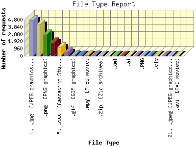

Report generated by Analog 6.0 and Report Magic 2.21
|
Web Server Statistics for "Harish Narayanan (hnarayan) - February 2007" Report generated by Analog 6.0 and Report Magic 2.21 |
The File Type Report identifies the type of information that is requested from the web site. GIF and JPG are the two types of graphic (image) files that are most commonly supported by web browsers. HTML (sometimes abbreviated HTM), ASP, and [directories] all represent actual pages. The number of image requests will almost always outnumber page requests as one page may contain several images.
This report shows all results. This report is sorted by number of requests.

| File Type | Number of requests | Number of bytes transferred | Percentage of the bytes | Percentage of the requests | |
|---|---|---|---|---|---|
| 1. | .jpg [JPEG graphics] | 4,734 | 165.509 MB | 13.89% | 30.45% |
| 2. | .html [Hypertext Markup Language] | 4,183 | 41.339 MB | 3.47% | 26.90% |
| 3. | .png [PNG graphics] | 2,832 | 119.202 MB | 10.00% | 18.21% |
| 4. | [directories] | 1,793 | 4.600 MB | 0.39% | 11.53% |
| 5. | .css [Cascading Style Sheets] | 1,136 | 3.262 MB | 0.27% | 7.31% |
| 6. | .pdf [Adobe Portable Document Format] | 509 | 553.982 MB | 46.48% | 3.27% |
| 7. | .gif [GIF graphics] | 158 | 221.983 KB | 0.02% | 1.02% |
| 8. | .htm [Hypertext Markup Language] | 46 | 4.831 MB | 0.41% | 0.30% |
| 9. | .mpg [MPEG movie] | 43 | 58.927 MB | 4.94% | 0.28% |
| 10. | .asc | 35 | 24.622 KB | 0.00% | 0.23% |
| 11. | .zip [Zip archives] | 17 | 82.274 MB | 6.90% | 0.11% |
| 12. | .ppt | 14 | 84.171 MB | 7.06% | 0.09% |
| 13. | .xml | 14 | 1.728 MB | 0.14% | 0.09% |
| 14. | .tex | 10 | 101.016 KB | 0.01% | 0.06% |
| 15. | .ai | 10 | 14.386 MB | 1.21% | 0.06% |
| 16. | .js [JavaScript code] | 5 | 4.614 KB | 0.00% | 0.03% |
| 17. | .PNG | 3 | 39.105 KB | 0.00% | 0.02% |
| 18. | .psd | 2 | 17.267 MB | 1.45% | 0.01% |
| 19. | .cls | 1 | 0.000 B | 0.00% | 0.01% |
| 20. | .m4v | 1 | 40.012 MB | 3.36% | 0.01% |
| 21. | .jpeg [JPEG graphics] | 1 | 18.328 KB | 0.00% | 0.01% |
| 22. | .avi [AVI movies] | 1 | 0.000 B | 0.00% | 0.01% |
This report was generated on March 6, 2007 18:40.
Report time frame February 1, 2007 00:06 to February 28, 2007 23:53.
| Web statistics report produced by: | |
 Analog 6.0 Analog 6.0 |  Report Magic 2.21 Report Magic 2.21 |